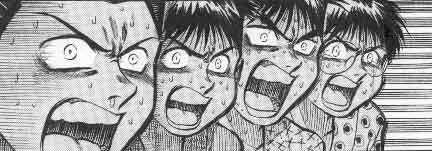
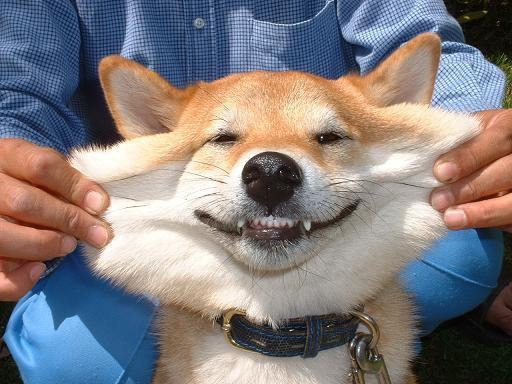
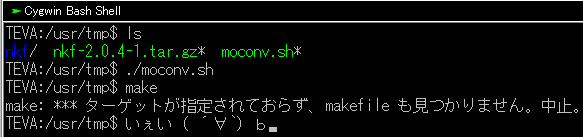
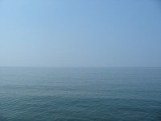
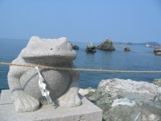
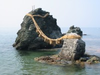
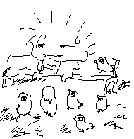
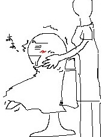

タイトル通りです。ただいま。
えーと今日は何日ですか。
28日昼勤、その晩に夜勤。
12時間睡眠そして夜勤、また事務所で寝て昼勤でした。
シャワー浴びてきました。
Mixiとか見てきました。
あ、やべ。
睡魔が。
俺はもうだめだ。
みなさんおやすみなさい、、、。＝□○ パタッ
私信：すなへ。
今日はもう寝るので、透過作業はもうちょい待ってちょーだいませませ
ｵﾜﾘ
ま、、、まぁ。
これから10ヶ月バイト三昧なわけで。＿|￣|○
気を取り直していきましょー
えー
7月入ったら旅立つつもりなわけで。
まーそこまで大層に旅って程でも無いだろうが、その、どこまでいけるかってのをやってみたい。
えーと、まずは九州に行きます。
これだけは譲れない。
ここだけは行きます。
さてバイトだ。
今日は夜勤だ。
久々の夜勤だ。
事務所で寝てきます。
ﾉｼ
採用担当者：「入社式は4月からとなります。」
な、、、なんだってぇーーーーーーーーーーーーーー！？
 ○|￣|＿
ハードディスクの整理をする為にフォルダを漁ってたら、昔BGに使っていたロボットを発掘したので…
アイコンとして再起動させてみた。
# 画像クリックでダウンロード出来ます。robocon.zip(1.19kb)
えー、個人的に、妙～に気に入ってしまったので
現在こいつらはCygwinアイコンとして元気に稼動しております(何
色の薄い方がリック、濃い方がトムです。
二人合わせて ピーー(当局の介入
…おのれBAN*AIめ(何
ってかIrfanViewすげー(ﾟдﾟ;)
こんな簡単にアイコンが作れるとは思わなかったよ。ってか知らなかったよ。
透過も簡単、透過したい色をクリックするだけだった。
普段画像閲覧にしか使ってないからにゃー
むぅ、やはり便利なツールだ。
ああ、もしこのアイコンが欲しいのでしたら、ご自由に持ち帰り、ご使用ください。
こんな1分で作ったような作品に、著作権とか主張すんのもアホらしいですからねー(´σд`)
ﾓﾜﾙ
よっしゃ、内定貰えたっ

これは現在最も俺の表情に近い写真です(何
さあ
この、腐りきった生活から抜け出そう。
Cygwin,これが無いと俺は暴れます。
なんで？って。そりゃぁ…
…なんでだろ（ぉ
まーコマンドプロンプトより機能豊富なbash(擬似)が使えるからですかね。
ほら、俺Linux厨だし。
viが使えて、locateが使えて、gccが手軽に使えるって素晴らしい事ですよ。ほんとに。
大量のテキストをいじる時なんかはbashの方が絶対便利です。
コマンドプロンプトからでもbashコマンド使えるようになりますしね。
まー、テキストをいじる機能を強化するツールとでも思っとけば間違い無いでしょう。
ところが
このCygwinってば日本語化が微妙で、
lsで表示しても文字化けがひどくて読めなくなってしまう事があります。
ってか初期状態だと間違いなく文字化けます。
viでも日本語入力出来ないしエラーメッセージも文字化けするし、、、もうウワーン！ヽ(`д´)ﾉ
って気分になります。
まーそれは設定次第でどーとでもなります。
ってかなりました（ぉ
今回はその覚書。
set meta-flag on
set convert-meta off
set output-meta on
set encoding=sjis
set fileencodings=iso-2022-jp,euc-jp,sjis
Cygwin_jeのサイトからnkf(nkf-2.*.*.tar.bz2)をダウンロードしてきます。
http://cygwin-je.sourceforge.jp/cygwin_je/release/nkf/
この時、Winの仕様で「nkf-2.*.*.tar.bz2」が「nkf-2.*.*.tar.tar」になってしまう事あるので、ちゃんとリネームしてからダウンロードしましょー
ま、別に問題無いんだけどね。でもほら、なんか気持ち悪いし(´σд`)
えー。
これは適当な所に置いておきましょう。
次に以下の神サイトから「moconv.sh」をダウンロード。
Studio Sixnine
わかりやすくするため、「nkf-2.*.*.tar.bz2」と同じ所に置いておきましょう。
で、nkfをダウンロードしたディレクトリに移動して、展開、インストール。
mkdir nkf
tar -jxvf nkf-2.0.4-1.tar.bz2 -C nkf
cp nkf/usr/bin/nkf.exe /bin/
cp -R nkf/usr/share/**//usr/share/
で、さっきの「moconv.sh」を実行します。
./moconv.sh
日本語化、完了(´∀`)=3

お疲れ様でした。
ほーほーほーたる来い
はいこんばんは。
早いものでもう夏至ですね。
梅雨だっつのにあんまり雨降らないので気持ちがいいです。
でも、まー農家の方達にとっては死活問題なわけで。
とゆー事は、ご飯が主食の俺にとっても死活問題。
いや、どうでもいいですね。
家の裏には川が流れてるんですが、そこでは毎晩蛍が乱舞しております。
特に遠くの田舎に行かなくても蛍が見れちゃうこの贅沢。
まあ、ここが田舎そのものだってだけなんですがね(´σд`)
こないだ名古屋に行った帰り道、街中を通らないで都祁村ってゆー山道から帰ってきました。
そこらへんまで来た所で俺の疲れはピークに達し、いい加減休憩を取らないと死にじゃうわーって事で
道の脇に車を寄せて、エンジンを切りました。
すると
月の明かりもまったく無い闇になっちまうわけです。
文明に慣れきってしまった俺たちを、容赦無く襲い掛かる闇…。
だけど、次第に目が慣れてくると色々なものが見えてくるんです。
それは、車のライトで最初は見えなかった、大量の蛍。
すごい数でした。
ぶんぶん飛んでるの（ぉ
意外と、蛍の光って明るいんですよ。
蛍が地面に近づくと、地形がくっきりと浮かび上がったり。
普段裏の川で蛍は見ているってゆー俺でさえも、ここまで近くで、こんなに大量の蛍を見たのは何年ぶりだろうかってぐらいで、
大変感動しました。
でも、やっぱり闇ってのは太古より人間が恐れてきたものなわけで。
次第に原始的な恐ろしさが込み上げてきました…。
さちょに（ぉ
俺は別に、普段からそーゆー環境で生活してるわけですから特になんとも思わないわけです。
でもさちょは別。
彼女は生まれた時からずっと大阪市内に住むお嬢さん。
そーゆー常闇に身を投げ出した事は無かったそうで、大変怖がっていました。
あー、喜ぶかなーと思ったんだけど、甘かったですね。
皆が皆、俺と同じような感性を持っているとも限らないっつー事を、改めて認識させられました。
俺は、車とかバイクは好きだけど
それらの音がまったくしないような場所が好きだったりするんです。
人がまったくいない様なところも好きです。
えー、例えばエンジンを切ったらば、耳が痛くなるぐらい静かな場所とか、
よく耳を澄ましてみると鳥のさえずりとか、水の流れる音が段々聞こえてくる様な場所。
なんか、そーゆー所にいると、とんでもなく心が落ち着くんです。
ほんとに。
なんで皆蛍の光に魅かれるのかなーとか考えてみた。
で、なんとなく思ったのは、きっと儚いものは美しいからか、とか思った。
闇は怖いけど、そこに浮かぶ懸命に生きる命ってものに
魅かれるもんなんかな、とか思ってみたり。
いや、なんでもないです忘れてください（ぉ
ああ、だからヤクルトは美味いのか。
あれほど儚い飲み物はねーもんな
ｵﾜﾙ
まさかの連続更新。
えー、最近なんか、日記は一日一回だけっつー制約を思い込みで持ってたんですが。
あー別にそんな事は無いわけで。
自分のスペースなんだから好き勝手やりゃあいいやねって事で。
思いついたら書いていく。それでいいじゃないかと。
うぇ
えーと、17日に名古屋に行ってきました。
いざカムイさんの元へ赴け！ヾ(ﾟ∀。)ﾉ＜ハイヤ・アラル・ファラーフ！って気持ちで(違
最初は、アーバンライナーっつー近鉄特急に乗りたくなったからなんですね。
急に(･ω･)
でもなんでもなしに乗るのもアレだなーと。
ああ、名古屋といえばカムイさんじゃないか、よし、名古屋行こう。
みたいな。
そう、突発的な思いつきです。
平たく言えばノリ。
際どく言えばカムイ(何
でも、さちょも一緒に行くなら高速のが安いよねーって事で車で行く事にしました。
電話でカムイさんからのサポートもあったので、珍しく、迷わなかったんですけどね。
あの、渋滞に巻き込まれましてねぇ、23号線なんて通るんじゃなかったよ、、、○|￣|＿
結局片道五時間かかりました。
死ぬかと思った。
で、ここでちょっとサプライズ（セロ
今回はなんとヨンさんも参加する事になっていたのです！ヾ(ﾟ∀。)ﾉ
うっひょー！なんだなんだ！？今日はなんかの祭りかー！？うひゃひゃーい
と、こんな気持ちで。
カムイさんとも無事に会えて、ヨンさんも「(´ﾉ∀)ちぇ、ちぇこりーのさーん」って呼んで無事に会えて（ぉ
いやーよかったよかった。
すっげー楽しかった
なんだろ、どうしよ、初めて会ったはずなのに、久々に会えたようなそんな感覚。
もう楽しい楽しい
すげー楽しい。
何が面白かったって、ビリヤード行ったんですけどね、カムイさん、超攻撃的なのですよ。
9ボールやったんですけど、あのー、9ボールって、手玉を1から順に当てていけば9を間接的に狙ってもいいわけで。
ってかそれが普通の戦術なんだけど。
あのーカムイさんね、9番だけしか狙わないんですｗ
ハスラーやー！天性のハスラーやー！とか騒いでました。
まあでも、外しちゃうのがカムイクオリティ(･ω･)
あばばば
ダーツもやりました。あれ面白いですねぇ。
ゲーム方式いっぱいあって、よくわかんないけど、
まー点数が一番高かったもん勝ちってゆー単純明快ルールでやりました。
そしたらヨンさんがですね、なんかあっさり凄いんです。
「ひゅんっ…スパーン ひゅんっ…スパーン スパーン」
えーと、上手く言えないんですけど。
下から三つ目、二つ目、ど真ん中ーって当てちゃいました(ﾟωﾟ;)
うん、一瞬目を疑ったよ。
うあー、こんなに上手い事当たるもんなんかーってね。
いやーあっさりと器用にこなす人は、Coolですねぇｗ
えーと、後はなんだ。
そうだ。
巷で噂のマウンテンって喫茶店(?)にも行ってきました。
メロンパン風スパってのを頼んだんですが…半ば無理矢理
……。
げろげろ(;´д`)
甘党を舐めてました。
ごめんなさい、俺が悪かったです。許してください。勘弁してください。
だからもう普通のご飯を食べさせてください。＿|￣|○
何言ってるかわからん人は、上記のリンクを辿ってみるとわかりますよ。
あーもう、まじで口にメロン突っ込まれた夢見たし(;´ｪ`)
俺も弱い子ねぇ
さーて、次は何処へ行こうかねぇ(´∀`)
ｵﾜﾘ
やべ、二週間も日記書いて中田よ。
無かったよ。
あー、Wカップ、地味に残念な結果でしたねぇ。
最後の相手は王者ブラジル。さーどうなることやら。
まーぶっちゃけ、あんまりサッカーに興味無いんですが、勝って欲しいですねぇ。
そしたら、なんか気持ちいい(何
えー。
深い意味はございません。
閑話休題。
前回、突然海が見たくなって行った鳥羽ですが。
財布を忘れた俺。
十分なガソリンも無く、道の駅奥伊勢おおだいで、やべーなーってたそがれてたんですね。
今回はそこからの続き。
ぼけーっと椅子で休憩していたら、近くに座っていたおばあさんが話しかけてきてくれました。
どこまで行きはんのー？って。
で、俺はさっきまで鳥羽まで行ってきたんだけど、財布が無いのに気づいて慌てて帰ろうとしているところですって述べたわけです。
こっそり道間違えてたってのも付け加えて。（ぁ
それから話のネタに、財布を忘れちゃってねーえへへー
みたいな。
そんな情けない話題で盛り上がろうと姑息な手を使ったわけです。
そしたらですね。
そのおばあさん、よっぽど俺がかわいそうに思ったのか。
気の毒に思ってくれたのか。
なんと2000円もくれましてですね(ﾟдﾟ;)
「これ使って無事に帰りー」なんて(ﾉд`)
いや、そんな見ず知らずの人間にお金なんて渡さないでください。
もう、その気持ちだけで俺は十分ありがたいですからっ！
いやいや！いいのいいの！受け取って！
いやいやいや！ほんとに大丈夫ですから！
いやいやいやいや！そんなぎりぎりのガソリンだと不安でしょ！
ってか私が不安なの！
受け取って！！
うわーんそれじゃあ甘えさせていただきます、本当にありがとーーう。ﾟ ﾟ(´д`)ﾟ ﾟ 。
そんなやり取り。
まあ、いい年こいたおにいちゃんが、財布を忘れて遠出している。
よっぽど重大事件だと思ってくれたんでしょうね。
ほんと、涙が出た。
こんな出会いがあるから、俺はバイクがやめられないわけで。
たまらんね、ほんと。
「袖触れ合うも多少の縁」とでも言いますか。
しっかりと住所を聞き出し、俺の住所も教えて、
ガソリンを満タンにして無事帰り着く事が出来ました。
俺、これほど感謝した給油は無かったですね。
嗚呼、人付き合いって素晴らしい。
二日後、きちんとそのおばあさんが働いている茶屋に行き、お礼をしてきました。
当然手土産を持って。
でも、お金は受け取ってくれませんでした、、、＿|￣|○
それなのにまた「おきん餅」っつーお土産まで貰ってしまって。
もう、頭が上がらない。
額から血が出るほど地面に擦り付けてもまだ足りない。
そんな気持ち。
しかし同時に。
愛しさで一杯。
バイクはいいですね。
そしておばあさん、本当にありがとうございます。
また寄らせていただきます（ぁ
あ、海が見たい。
突然そんな衝動に駆られたので行ってきました、三重県伊勢市。
ってゆーか鳥羽まで。
この日の気温は27℃を上回る真夏日。梅雨入りする直前の悪あがきってかなんつか、そんな感じ。
だから市街地なんて走ってたら死んじゃうのは目に見えてるわけで。
せっかく伊勢街道ど真ん中に住んでるんだから、そこ通って行っちゃえーとだけ考えて家を出ました。
あー、林道はとても気持ちがいいですね。
涼しいし、前後に車はいねーし、なんてったってゆるいカーブが連続する程度なのでスピードもガンガン出せるしね。
1時間後に走行距離を見たら、ジャスト80km。おお、時速をもろに表す数字。
なんの邪魔も無く走れたわけか。すげぇ
2時間後、伊勢に到着。
嗚呼、潮の香りがする、、、
この、なんか生臭い臭いがまた、、、（ぉ
じゃじゃん 
ふー満足( ﾟ∞ﾟ)=3
とてもいい気分だ。
別段何かするってわけでもなく、30分程ぼけーっとしてました。
ふと横を見たらなんと、かの有名な夫婦岩があるじゃあないですかｗ
 
おー、初めて見たよ。
でも、残念だったね手羽君。
現時刻15:30．日の出は見れませんよっと＿|￣|○
喉渇いたからお茶でも買おうかなーと財布を探すわけですがっがが
あれ、無い。
財布忘れた！
やべー！伊勢まで無免許で来ちゃったよ！
ガソリンとかどーすんだよ！
往復分考えてねーぞおぉぉ
ま、じたばたしてもしゃーねーやと、とりあえず引き返すことにしました。(･ω･)
公園って好きです。
特に木蔭の多い公園が。
田舎生まれですからねー、たとえ都心部でも緑豊かな場所があるとホッとするんです。
今日も昼に試験が終わって、パンでも食いながらゆっくりするかーってノリで休憩してたんですけどね。
あのー、鳩が沢山いるじゃないですか、公園って。
初めは単に気まぐれでね、切れ端を二･三切れやってたんですが、ええ。
あっちゅーまに包囲されちゃいました。
こいつらすっとぼけた顔しながら、実はチラチラこっちの様子を見てやがるんですよ。
「クックックック……|дﾟ)ﾁﾗ」って。
|дﾟ)ﾁﾗｯ
|дﾟ)дﾟ)ﾁﾗｯ
|дﾟ)дﾟ)дﾟ)ﾁﾗｯ
ほっとけばどんどん増えてきやがんの。
挙句、足元どころか手元にまで近づいてきて(ﾟД,ﾟ)ジーーですもん。
ちょっと怖かったですよ。
っつーか、なんか逆に、パンをあげない俺が悪いみたいな雰囲気にさえなってゆきました。
好きなはずの、カスタードクリームの入ったパンがあんまりおいしく食べられなかったです。
気まずくて。
うーむ、中途半端な善意(?)は身を滅ぼしますねぇ。
いや、ごめんって、そんな目で見るなよ。
# 未だに電話番号が不明です。(ぉ
# 連絡ください＿|￣|○
首を締められる。
こんな事されたら普通、すぐにでも振り払いたくなる。
でも散髪に行ってお姉さんにカバーをかけてもらった時は別だ(何
首元を触られるの、弱いんだよねー 


{kind=link}
{kind=link}
{kind=link}